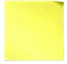
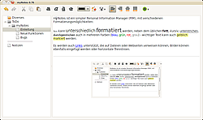
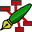

Notizen
Sich Notizen machen – eine universelle Methode, um Informationen zu sammeln. Auch im digitalen Zeitalter sind „Schmierzettel“, „Spickzettel“ oder der klassische „Zettelkasten“ immer noch beliebte Varianten. Was auch am Medium selbst liegt: Papier braucht weder Steckdose noch Akku, lässt sich problemlos verkleinern (falten) und die Haltbarkeit beträgt (bei sachgemäßer Lagerung) mehrere tausend Jahre.
Notizen auf dem Computer haben andere Vorteile: sie sind zu jedem Zeitpunkt beliebig veränderbar und vor allem einfacher zu kopieren und (über das Internet) zu verteilen. Die einfachste Methode, Notizen auf dem Rechner bzw. PC (schriftlich) festzuhalten, ist ein Texteditor. Darüber hinaus gibt es vielfältige Möglichkeiten, die bei Bedarf auch gleich helfen, die Sammlung zu strukturieren.
Innerhalb dieses Wikis gibt es bereits verschiedene Übersichtsseiten:
Desktop-Wikis zur Verknüpfung gesammelter Informationen
Personal Information Manager (PIM) zur Organisation von Adressen, Terminen, E-Mails usw.
Mind Maps, um Informationen grafisch strukturiert darzustellen
Kalender zum Anlegen und Verwalten von Terminen, wiederkehrenden Ereignissen usw.
Weitere Varianten wie Klebezettel, Gliederungseditoren (Outliner) und Aufgabenplaner werden nachfolgend beschrieben. Letzten Endes hängt es von den eigenen Ansprüchen ab, für welches Programm man sich entscheidet.
Klebezettel¶
 Kleine Erinnerungszettel – am besten selbstklebend – müssen nicht zwangsläufig am Monitor bzw. Arbeitsplatz befestigt, sondern können auch auf dem Desktop angebracht werden. Eine alphabetische Übersicht:
Desklets¶
Informationen aller Art auf dem Desktop unterbringen – das ist eine Spezialität der Desklets. Dazu gehören auch die allgegenwärtigen Klebezettel. Diese Programmgattung wird in einem eigenen Artikel behandelt: Desklets
GNOME Klebezettel¶
Programme, die sich im Panel von GNOME 2 verankerten, wurden auch "Applets" genannt. Die Desktop-Umgebung GNOME 2 brachte eine reichhaltige Auswahl mit, die auch einen Klebezettel-Ersatz enthielt. Allerdings konnte es passieren, dass unter bestimmten Umständen vorhandene Notizzettel unwiderruflich verloren gingen.
Mit der Einführung von GNOME 3 stehen keine Applets mehr zur Verfügung. Die Aufgabe des ehemaligen Klebezettel-Applets übernimmt nun das Programm Notes  .
.
Gnote¶
Gnote ist eine Portierung von Tomboy auf C++, die auf die manchmal kritisierte Mono-Umgebung verzichtet. Es kann direkt aus den offiziellen Paketquellen installiert werden.
Indicator Stickynotes¶
Indicator Stickynotes bietet ein Symbol für das Panel, realisiert als Benachrichtigungsanzeige (indicator applet). Schlicht und einfach – also genau das, was man für eine Notiz benötigt. Speziell für die Desktop-Oberfläche Unity empfohlen. Über die Projektseite ist eine Fremdquelle (PPA) verfügbar.
KNotes¶
Die KDE-Anwendung KNotes erlaubt das Anbringen virtueller Haftnotizen ("Post-its") auf dem Desktop. KNotes ist Teil der KDE-PIM-Suite Kontact. Alternativ kann man auch ein Plasmoid verwenden.
MATE Klebezettel¶
Der designierte Nachfolger der GNOME Klebezettel ist das gleichnamige MATE-Applet Sticky Notes .
Notizblock¶
Auch die Desktop-Umgebung Xfce enthält ein Klebezettel-"Applet". Siehe Xfce Panel-Plugins.
Tomboy¶
Auf den ersten Blick nur ein weiterer Klebezettel, aber diese lassen sich untereinander vernetzen (verlinken) und ermöglichen so ein Desktop-Wiki. Siehe Tomboy.
Xpad¶
Eine Desktop-unabhängige Variante, die in Lubuntu ab Version 10.10 vorinstalliert ist. Besonders interessant auch für alternative Fenstermanager. Details im Artikel Xpad.
zNotes¶
zNotes basiert auf der Grafikbibliothek Qt und kann daher plattformübergreifend eingesetzt werden. Die Oberfläche erinnert eher an einen Notizblock als an einen Klebezettel. Es ist nicht in den offiziellen Paketquellen enthalten, aber über die Projektseite kann ein Fremdpaket heruntergeladen und manuell installiert werden.
Outliner¶
|  |
| typisches Layout eines Outliners |
Eine Sonderrolle nehmen die sog. Gliederungseditoren (Outliner) ein. Diese bieten die Möglichkeit, die gesammelten Informationen auch gleich zu strukturieren. Unterschiede bestehen beim integrierten Editor: während manche Programme nur rudimentäre Funktionen besitzen, enthalten andere vielfältige Möglichkeiten ähnlich einer Textverarbeitung (Richtext Editor).
Nicht alle Programme sind in den offiziellen Paketquellen enthalten. Allerdings stellen die entsprechenden Projekte meist Fremdpakete für Ubuntu zur Verfügung. Eine alphabetische Übersicht:
CherryTree¶
CherryTree besticht durch einen umfangreichen Editor, der viele Formatierungsmöglichkeiten bietet. Da erst ab Ubuntu 12.04 in den offiziellen Paketquellen enthalten, muss unter älteren Ubuntu-Versionen ein Fremdpaket genutzt werden.
gjots¶
gjots ist ein älterer, einfacher Outliner für GNOME 2. Das entsprechende Paket nennt sich gjots2. Keine Textformatierung, keine Bilder – für reine Textnotizen.
KeepNote¶
KeepNote - umfangreicher Outliner mit Richtext-Editor. Die Notizsammlung wird innerhalb eines Ordners verwaltet. Für Windows und Linux verfügbar, ab Ubuntu 12.10 in den offiziellen Paketquellen enthalten. Unter älteren Ubuntu-Versionen kann ein Fremdpaket genutzt werden.
KJots¶
KJots ist die Notizverwaltung / der Outliner für KDE und kann bei Bedarf in Kontact integriert werden.
myNotes¶
MyNotes  ist ein proprietärer (unfreier) Notizverwalter, der aber kostenlos genutzt werden kann. Er ähnelt Zim, besitzt aber keine Plugins. Der Editor bietet viele Formatierungen, gespeichert wird im HTML-Format. Bilder lassen sich zwar einbinden, bleiben aber Verweise auf externe Dateien.
ist ein proprietärer (unfreier) Notizverwalter, der aber kostenlos genutzt werden kann. Er ähnelt Zim, besitzt aber keine Plugins. Der Editor bietet viele Formatierungen, gespeichert wird im HTML-Format. Bilder lassen sich zwar einbinden, bleiben aber Verweise auf externe Dateien.
NoteCase¶
Ein Klassiker ist NoteCase, das leider nur noch kommerziell weiterentwickelt wird. Interessant ist die Unabhängigkeit vom Betriebssystem und die integrierte Verschlüsselung.
TreeLine¶
TreeLine - weiteres Programm, dessen Wurzeln lange zurückreichen. Für die Programmoberfläche wird die Grafikbibliothek Qt verwendet. In den offiziellen Paketquellen enthalten.

Zim¶
Zim ist eine strukturierte Notizverwaltung, innerlich ein Desktop-Wiki. Nützliche Plugins für Aufgaben, Rechtschreibung, Formeln, GraphViz, Kalender, Tags, usw. sind vorhanden.
Aufgabenplaner¶
Obwohl der Übergang zu Kalendern fließend ist, gibt es spezielle Aufgabenplaner (z.B. für To-Do-Listen):
BasKet¶
BasKet (= Korb) ist ein KDE-Programm, mit dem inhaltlich zusammengehörige Dinge (Notizen, Links, Bilder und weitere Informationen) in einen virtuellen „Korb“ geworfen werden. Basket eignet sich gut dafür, Informationen wie z.B. To-Do-Listen, Einkaufszettel, vorbereitende Informationen für einen Vortrag, die Organisation von Programmcode und anderes zusammenzutragen.
Ab Ubuntu 10.04 ist die Version 1.8.1 als Beta für die einst geplante Version 2.0 in den offiziellen Paketquellen enthalten. Diese Version ist seit September 2010 nicht mehr weiterentwickelt worden. Leider funktioniert in dieser letzten Version die Such- und Filterfunktion nicht (Search/Filter Bug), was das Programm mehr oder weniger unbrauchbar macht.
Calc-O-Time¶
Calc-O-Time ist ein Aufgabenplaner, bei dem sich die Aufgaben mit Wichtigkeiten versehen lassen und vorab bereits der geschätzte Zeitbedarf eingetragen werden kann.
Getting Things GNOME¶
Einen einfachen und damit sehr übersichtlichen Aufgabenverwalter stellt Getting Things GNOME dar. Lässt sich auch mit Online-Diensten wie Remember the Milk koppeln.
Go For It!¶
Go For It! ist eine für GNOME 3 konzipierte Aufgabenliste mit integriertem Timer. Interessant ist die Verwendung von todo.txt , das einen plattformübergreifenden Austausch der Aufgaben ermöglicht. Der Programmautor stellt zur Installation ein PPA bereit (ab Ubuntu 14.04).
KTimeTracker¶
KTimeTracker ist die Aufgabenmanagement- und Zeiterfassungsanwendung von KDE. KTimeTracker ist Teil der KDE-PIM-Suite Kontact.

Nitro¶
Nitro (Nitro Tasks) bietet eine lokale Anwendung zur Aufgabenverwaltung. Interessant sind die vielfältigen Synchronisationsmöglichkeiten mit anderen Geräten wie z.B. Smartphones im Kombination mit Cloud-Diensten.

Task Coach¶
Task Coach ist ein plattformübergreifender, in Python geschriebener Aufgabenplaner, mit dem man auch zeitliche "Budgets" für die Erledigung von Aufgaben setzen kann. Es ist erst ab Ubuntu 13.10 in den offiziellen Paketquellen enthalten. Für ältere Ubuntu-Versionen wird auf SourceForge  ein Fremdpaket im .deb-Format angeboten.
ein Fremdpaket im .deb-Format angeboten.
Tasque¶
Tasque ist ein einfaches Aufgabenverwaltungsprogramm im Stile einer To-Do-Liste. Synchronisation mit Evolution und dem Online-Dienst Remember the Milk ist möglich. Da es die Laufzeitbibliothek Mono benötigt, muss diese ab Ubuntu 12.04 ebenfalls installiert werden.
Webdienste¶
Webdienste lösen das Problem, dass sich frei nach Murphy dringend benötigte Informationen immer auf dem Gerät befinden, das gerade nicht verfügbar ist. Dieser Vorteil kann aber auch zum Nachteil werden, da man eigene Daten in die Hände eines externen Dienstleisters gibt.
Evernote
- nur in der eingeschränkten Basisversion kostenlosHolly
- Aufgabenverwaltung für Nerds, keine Anmeldung erforderlichTodoist
- Anmeldung erforderlich
Zim¶
Zim unterstützt Aufgabenplanung und die Getting Things Done-Methode mit dem Aufgabenlisten-Plugin Task List .
Terminal¶
 Die meisten der in diesem Artikel genannten Programme setzen eine grafische Oberfläche voraus. Die folgenden Programme sind zur Verwendung auf der Kommandozeile konzipiert.
Die meisten der in diesem Artikel genannten Programme setzen eine grafische Oberfläche voraus. Die folgenden Programme sind zur Verwendung auf der Kommandozeile konzipiert.
Outliner¶
Emacs Org-Mode¶
Org-Mode hat eine breite Nutzerbasis mit hoher Entwicklungsaktivität und eine umfassende Dokumentation. Es ist ein Emacs-Mode. Eine ältere Version findet sich im Paket emacs, eine etwas aktuellere Version im Paket org-mode.
hnb¶
hnb ist eine Anwendung ausschließlich für die Kommandozeile oder das Terminal. Export als XML, alternativ HTML oder ASCII (Text).
VimOutliner¶
vimoutliner/vimoutliner – Outliner-Plugin für VIM.
Aufgabenplaner¶
Aufgabenplaner zur Verwendung auf der Kommandozeile sind im Artikel Kalender zu finden.
Sonstige¶
Taskwarrior¶
Taskwarrior eine der Möglichkeiten, Notizen (ohne grafische Oberfläche) im Terminal oder auf der Konsole zu erstellen.
Sonstige¶

FocusWriter¶
FocusWriter ist ein auf das Wesentliche beschränkter Texteditor, der durch seine Schlichtheit das kreative Schreiben unterstützen möchte. Eine Alternative ist PyRoom.
Lifeograph¶
Lifeograph ist ein digitales Notizbuch, das Einträge standardmäßig chronologisch sortiert. Es kann damit beispielsweise als Reisejournal oder Tagebuch genutzt werden. In der Konzeption RedNotebook (siehe unten) sehr ähnlich. Der Hauptunterschied ist die bei Lifeograph integrierte AES-Verschlüsselung.
MyNotex¶
MyNotex ist eine Neuentwicklung, die den Import bestehender Notizen aus Tomboy oder Gnote erlaubt. Für Ubuntu werden auf der Homepage Fremdpakete angeboten. Weiteres ist dem Wiki-Artikel und dem deutschen Handbuch zu entnehmen.
PyRoom¶
Wer aus PC oder Notebook eine reine Schreibmaschine machen möchte, ist bei PyRoom perfekt aufgehoben.
RedNotebook¶
RedNotebook ist ein digitales Tagebuch mit integriertem Kalender. Gerade wenn eigene Notizen bewusst chronologisch geordnet bzw. strukturiert werden sollen, ist das Programm sehr nützlich.
TreeSheets¶
TreeSheets bietet eine Kombination aus Tabellenkalkulation, Outliner, Mind-Map und Texteditor. Bilder und ein Tutorial erleichtern den Einstieg in dieses ungewöhnliche, nur in Englisch vorliegende Programm.
Installiert werden kann es über das Software-Center (treesheets). Aktueller ist ein auf der Homepage angebotenes .tar.gz-Archiv, das nur entpackt werden braucht. Wer das Programm selbst aus dem Quellcode kompilieren möchte, findet diesen auf GitHub .
Whyteboard¶
Das Programm Whyteboard bietet, der Name lässt es vermuten, ein Whiteboard für den Desktop. Auf einer leeren Fläche oder in bestehenden PDF- und Bilddateien wird gezeichnet, markiert und beschriftet.
Xournal¶
Mit einem Grafiktablett kommentieren - am besten gleich in bestehenden PDF-Dateien? Xournal machts möglich.
Zettelkasten¶
Der Zettelkasten nach Niklas Luhmann soll den Umgang mit (wissenschaftlichen) Texten erleichtern und wesentlich effektiver gestalten. Unterstützt wird sowohl das Sammeln und Verwalten wichtiger Textstellen, Kommentare und Gedanken als auch die anschließende Verwendung dieser Textsammlung. Das Java-basierende Programm kann plattformübergreifend eingesetzt werden.
Links¶
GTD unter Linux
- Vergleich von Osmo, Tasque und Getting Things GNOME, 04/2010Group test: note takers
- Vergleich verschiedener Outliner-Programme: Tomboy, KnowIt, NoteCase, Basket, TuxCards und Zim, 03/2009Aufgabenplaner für GNOME
- Vergleich von Getting Things GNOME mit Evolution, Tasks, Tasque, Tomboy, Taskcoach und Gtodo, 03/2009ActivInspire - kommerzielle, plattformübergreifende Software für elektronische, interaktive Whiteboards des Herstellers Promethean
- Erstellt mit Inyoka
-
 2004 – 2017 ubuntuusers.de • Einige Rechte vorbehalten
2004 – 2017 ubuntuusers.de • Einige Rechte vorbehalten
Lizenz • Kontakt • Datenschutz • Impressum • Serverstatus -
Serverhousing gespendet von